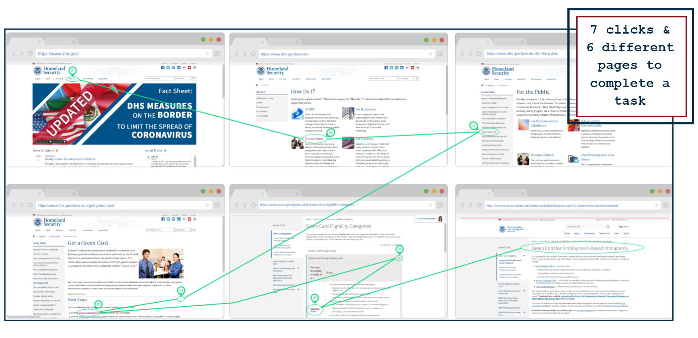
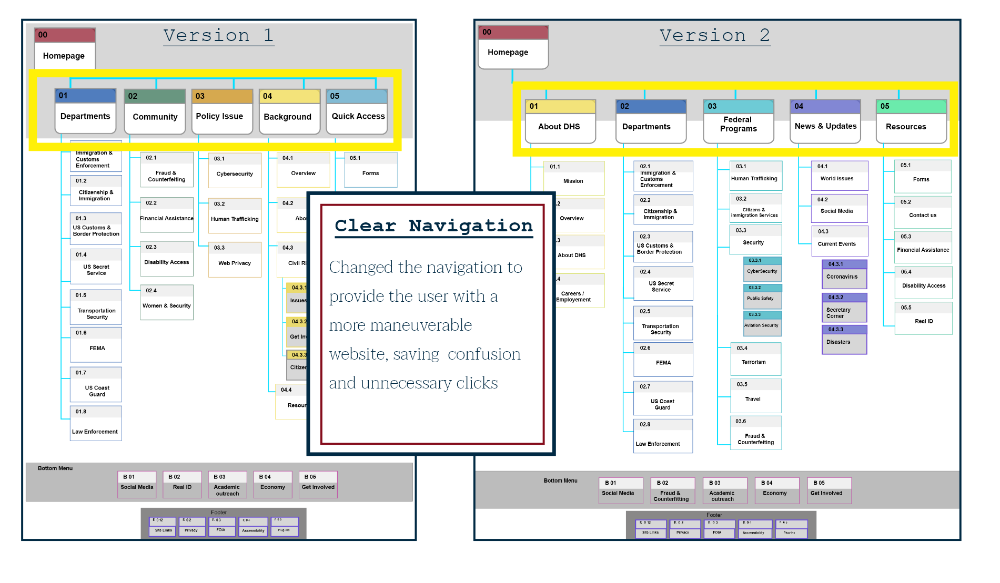
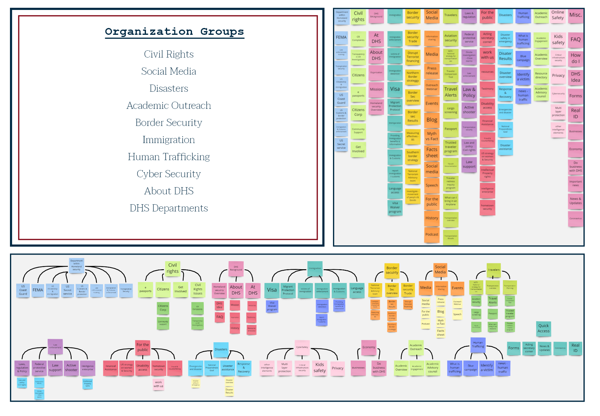
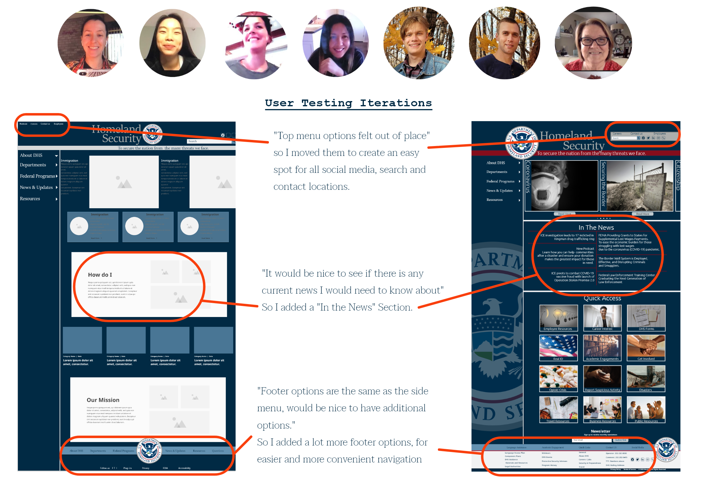
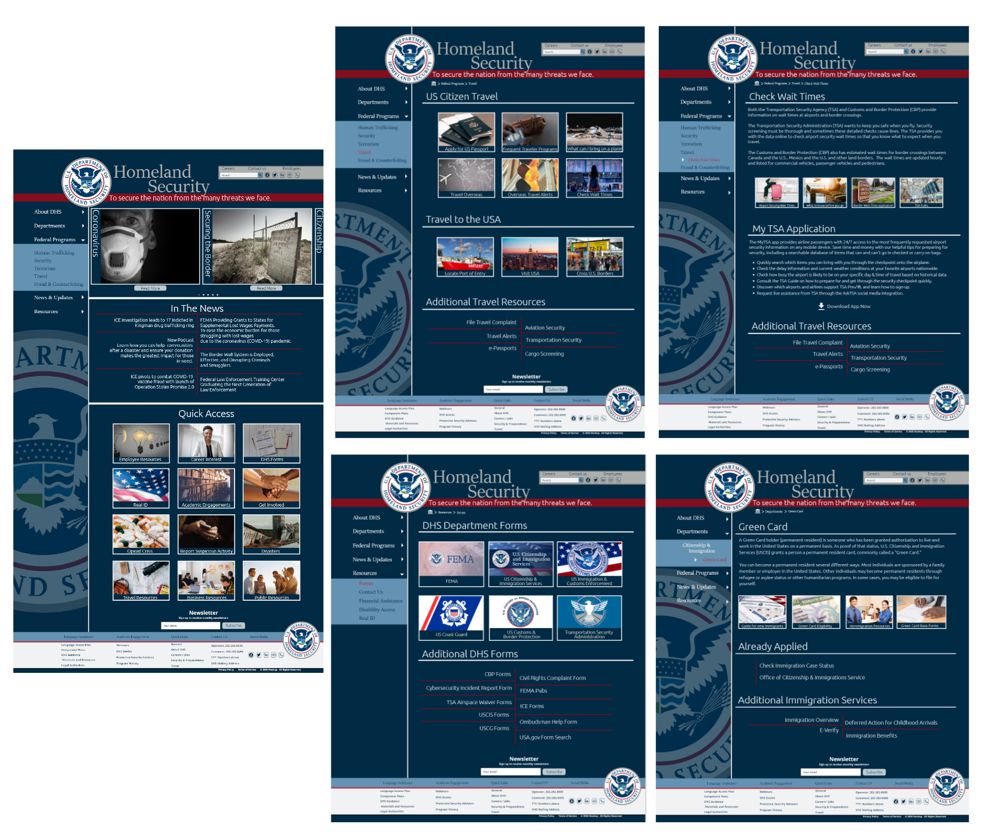
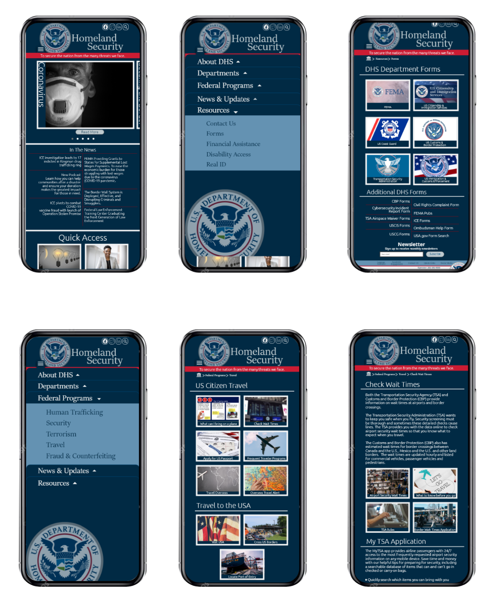

The department of Homeland Security is responsible for public security. Their mission is to prevent and disrupt terrorist attacks, protect against natural or human-made hazards, also respond to and recover from incidents that occur. The website serves as a starting point for visitors who want to learn how to legislatively solve a particular issue, submit forms and applications for various requests, and read the latest press releases of the department.
For the analysis portion of this project I worked in a group of 3, then was independent for the remaining project. Our initial project goal was to redesign a government webpages navigation. The UI process was implemented through research, heuristic evaluations, information architecture, a user persona, style guide, testing and prototyping.
The Navigation for Homeland Security is lacking usability and recognition. My goal with the redesign of the Homeland Security website is to create a heuristic approach to the navigation & style for the UI design.
The Homeland Security webpage as it is today given the task of evaluating for Green Card eligibility the user would need to make seven clicks and visit six different webpages to learn about the eligibility requirements.
The Homeland Security website serves as a starting point for visitors who want to learn how to legislatively solve a particular issue, submit forms and applications. The problem we encountered from our user testing was a lack of navigational insight. The abundant amount of text and confusing labeling make it hard to navigate and understand exactly where content is.
The site mapping is a tool to use provide valuable information about the order of files. Once this step was completed I kept struggling with how it felt. The community portion could in theory encompasses many different avenues of the Homeland Security webpage and the policy issues don't clarify to which extent of a specific issue. I decided to redesign the site map to ensure the website would be an easily intuitive and quick to navigate.
When starting the information architecture of the Homeland Security webpage I broken down the topics into organized categories. Then recategorized them into a more usable and streamlined process.
The tasks for the user are to complete find the green card webpage, the DHS forms and be able to check the wait times for the travel links. The users will test the navigation for the Homeland Security web and mobile device. Evaluating the easy and effectiveness of the new navigation design. The goals for the user are to complete the tasks without excessive clicking. Complete the goals without confusion.
These are a few examples of the final prototype. As you can see There are a few different paths for a user to navigate to; DHS Forms, Green Card Eligibility, or US travel & wait times.
 Based on changes that were made to the Homeland Security website, now the navigation is clear, precise and with the use of the breadcrumbs the user knows exactly where and how to navigate.
The department of Homeland Security is responsible for public security. The website serves as a starting point for visitors who want to learn how to legislatively solve a particular issue, submit forms and applications for various requests, and read the latest press releases of the department. So it is critical for users to be able to maneuver with easy and purpose. Throughout the process of design, card sorting, creating a style guide, testing, iterations, and prototyping the new Homeland Security navigation can be easily navigated with a clear intention.